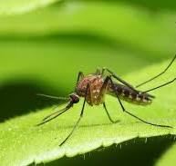

Did you know it takes just one mosquito for your pet to get heartworm disease? Our wonderful team here at Leading Edge Vets is more than happy to help you find the right prevention for your furry friends! Give us a call today! 715-934-9055

Heartworm disease is a parasitic infection caused by long worms that infest the heart, lungs, and blood vessels of our pets.
Heartworms are transmitted by the bites of infected mosquitoes. Mosquitoes bite infected wild animals, then transmit the infection to pet dogs, cats and ferrets.
Forgetting a dose of heartworm preventive or giving medication seasonally can leave pets unprotected.
FAMOUS LAST WORDS YOUR PET SHOULD NEVER HEAR YOU SAY!
"Missing just ONE DOSE of heartworm medication won't matter"
"Mosquitoes never come indoors"
"I'll remember to give your heartworm preventive TOMORROW"
"Flea and Heartworm medication are the same thing"
"If you get worms we can just have you treated"
"Heartworm disease is just a DOG disease"
"We'll just SKIP your heartworm test this year"